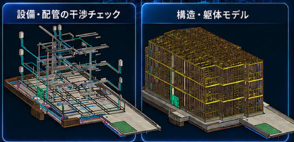

干渉チェックは、部材同士の重なりを調べること。
BIMの干渉チェックは、建築・構造・設備のモデルを重ね、部材同士が同じ空間を占めていないか確認する作業です。例えば、梁を横切る配管、床を貫通するダクト、壁と設備の重なりなどを立体で確認します。
ただし、現場で確かめたいのは「重なっているか」だけではありません。保温材を含めて納まるか、勾配を確保できるか、点検や交換のために手が入るか。接触していない箇所にも、検討が必要な納まりがあります。
- 部材の重なり：梁・柱・壁と、配管・ダクト・設備の位置関係。
- 周囲の余裕：保温、施工、点検・交換のために必要な空間。
- 情報の不足：決まっていない高さ、寸法、ルート、開口位置。
確認できる範囲は、モデルに入力された部材・寸法・条件によって変わります。自動検出と、断面・3Dを使った納まりの確認を組み合わせて進めます。

検出しただけでは、打ち合わせが進まない。
指摘が大量に並んでいても、どこの話で、何を決めればよいかが分からなければ、監督の確認作業は残ります。Tojo nexusでは、図面の食い違いや未決定事項を、現場で判断に使える情報へ整理します。
- 場所を特定する。階・通り芯・部屋名などと、元の図面番号を揃えます。
- 同じ箇所を見られるようにする。断面と3D画像を組み合わせ、部材の位置や高さを示します。
- 確認したいことを絞る。干渉している事実、未確定の条件、確認先を分けて書きます。
- 回答を次のモデルへつなぐ。決定内容と保留事項を整理し、合意した範囲でモデルを更新します。
質疑のまとめ方の例（特定案件の実績ではありません）
場所：2階廊下・A通り付近
確認事項：梁と排水管のルートが重なる。迂回した場合の天井内の高さと勾配を確認したい。
添える資料：位置が分かる平面、梁と配管の高さが分かる断面、周囲を含む3D画像。
打ち合わせで決めること：ルート・高さ・関連部位の調整方針と、次に確認する担当。
モデルの作成と確認事項の整理を引き受けることで、監督が施工方法や調整方針の判断に時間を使える状態を目指します。
外注前に、図面と「どこを見たいか」を揃える。
最初からすべての部位を詳しくつくる必要はありません。着工前に確認したい箇所や、直近の打ち合わせに必要な範囲を決めると、制作の優先順位が明確になります。
- 意匠・構造・設備の図面と、それぞれの改訂日。
- 既存モデルがある場合は、そのデータと作成範囲。
- 気になっている階・部位・取り合いと、決まっていない条件。
- 必要な成果物。モデル、断面、3D画像、質疑一覧など。
- 確認したい日、打ち合わせ日、変更を反映する範囲。
不足している資料がある場合も、まずその状態を共有してください。確認できることと、追加情報が必要なことを分けて、施工BIMの依頼範囲を整理します。
変更した箇所と、その周りを確かめる。
配管を動かして一つの干渉を解消しても、別の部材との関係が変わる場合があります。変更をモデルに反映した後は、関連する範囲を再確認し、図面・3D画像・質疑一覧の版も揃えます。
同じモデルは、次の施工打ち合わせに向けた図面・資料づくりにも使えます。確認して終わりにせず、現場で決めた内容を引き継いでいくことが大切です。
機能の参考：Autodesk Revit ヘルプ「Interference Checking」。本記事では、現場での確認・資料整理の考え方も合わせて説明しています。